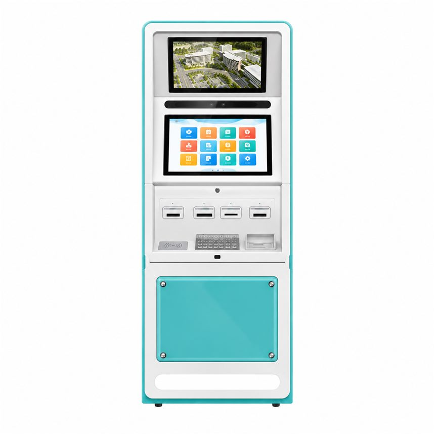

OEM/ODM Self-Service Kiosk Project Checklist
Quick answer: What to prepare for an OEM or ODM kiosk RFQ, including cabinet design, modules, software, certifications, test samples and project milestones.

A useful OEM/ODM request for quotation allows the hardware team to estimate the right scope instead of guessing. Use the following questions when preparing a custom self-service terminal project.
Share visual and dimensional references
Send sketches, product reference images or industrial-design files. Include screen size, orientation, maximum floor area, expected height, mounting position and any constraints affecting disabled access.
Specify electrical and peripheral interfaces
List USB, serial, Ethernet, Wi-Fi, Bluetooth and external device connections. Identify approved module part numbers for printers, scanners, cameras, card readers and other peripherals where available.
Separate branding from engineering changes
A different logo or cabinet color is a branding task. A redesigned enclosure, different cooling architecture or added mechanical modules is an engineering task. Splitting these requests helps estimate cost and lead time accurately.
Verify target-market requirements
State the deployment country, mains power specification and any required safety, electromagnetic compatibility, accessibility, data-protection or payment-system approvals. Do not assume a product is certified without receiving the relevant evidence.
Agree on sample and acceptance criteria
Define target volume, estimated schedule, prototype sign-off, software test responsibilities and change-control rules. This makes the transition from proof of concept to the delivery stage more predictable.
Working on a related kiosk project?
Share your specifications and intended use with our team, and we will reply with the questions that still need answers.
Request a kiosk quote Browse kiosk models